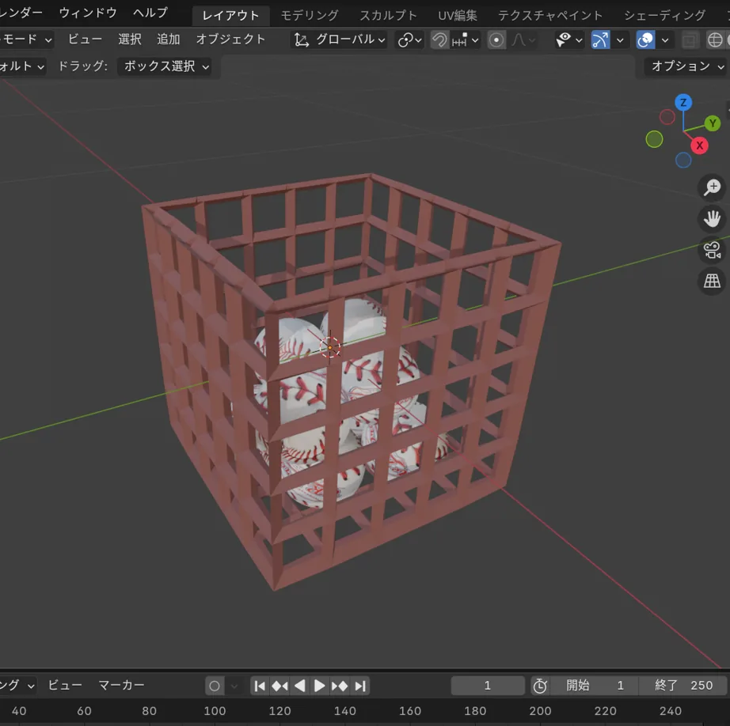

何をつくったか
大学の演習で、Bullet Physicsによる物理シミュレーションを学び、その成果としてVRストラックアウトを制作しました。既成のゲームエンジンには頼らず、C++で物理計算とVRでの描画・操作をつないでいます。
触り心地を支える実装
つかむ、離す、飛ぶ
コントローラーとボールの間に6自由度の拘束をつくり、握った感覚を表現しました。離した瞬間には直前の手の動きから速度を求め、ボールに与えています。
当たった後も自然に
的には衝突を検知して倒れる仕組みを設けました。ボールが的を通り抜けないよう衝突判定を調整し、遊びとしてのわかりやすさと物理挙動の両方を確かめました。
制作で残ったこと
物理エンジンが計算した位置と回転をVRの描画へ渡す際、座標の扱いを揃える必要がありました。目に見える小さな違和感の裏に、計算と表現の接続があることを実感しました。
制作の記録
